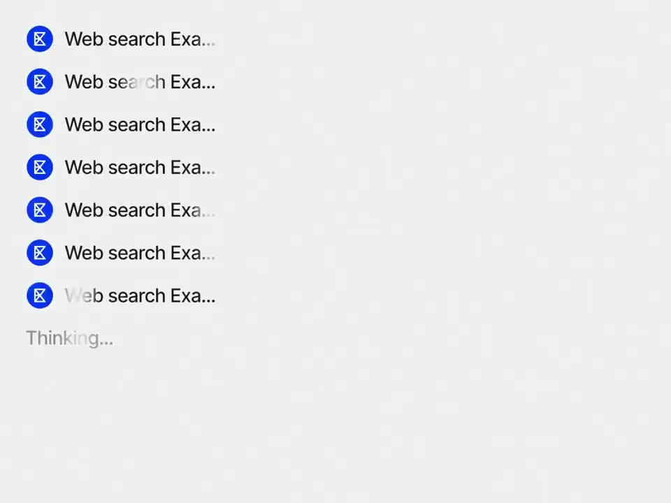
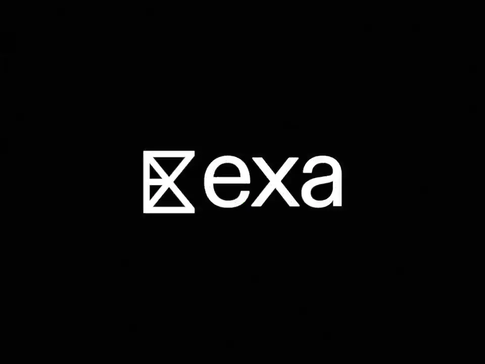

Exa / V329
Exa — Give Codex and ChatGPT access to 100B+ websites
先提出一个需要外部资料的具体问题，再展示搜索调用和结构化回答；结尾才概括集成能力。
构图与编排 可播放 · 可替换内容
整体编排规则示例
查看 HTML 源码
<!doctype html><html lang="zh-CN"><meta charset="utf-8"><meta name="viewport" content="width=device-width,initial-scale=1"><title>Exa — Give Codex and ChatGPT access to 100B+ websites · sequence</title><style>html,body{margin:0;width:100%;height:100%;overflow:hidden;background:#f6f6f3}canvas{display:block;width:100%;height:100%;object-fit:contain}</style><body data-mode="sequence"><canvas width="1000" height="600"></canvas><script src="data.js"></script><script src="common.js"></script><script src="scene.js"></script><script src="bridge.js"></script></body></html>画面元素输入栏工具标签检索记录地址行对照表品牌名
MOTION LANGUAGE
动作与构图
局部动作 · 构图规则
01
让问题有明确的输出目标
让问题有明确的输出目标规则示例
查看 HTML 源码
<!doctype html><html lang="zh-CN"><meta charset="utf-8"><meta name="viewport" content="width=device-width,initial-scale=1"><title>Exa — Give Codex and ChatGPT access to 100B+ websites · sequence</title><style>html,body{margin:0;width:100%;height:100%;overflow:hidden;background:#f6f6f3}canvas{display:block;width:100%;height:100%;object-fit:contain}</style><body data-mode="clip" data-start="2.5" data-end="8"><canvas width="1000" height="600"></canvas><script src="data.js"></script><script src="common.js"></script><script src="scene.js"></script><script src="bridge.js"></script></body></html>开场文字将工具名与宿主名分色，进入白色输入窗后完整输入研究问题。工具标签留在输入栏附近，避免被误解为普通聊天。
02
检索过程短，回答留阅读时间
检索过程短，回答留阅读时间规则示例
查看 HTML 源码
<!doctype html><html lang="zh-CN"><meta charset="utf-8"><meta name="viewport" content="width=device-width,initial-scale=1"><title>Exa — Give Codex and ChatGPT access to 100B+ websites · sequence</title><style>html,body{margin:0;width:100%;height:100%;overflow:hidden;background:#f6f6f3}canvas{display:block;width:100%;height:100%;object-fit:contain}</style><body data-mode="clip" data-start="10" data-end="16"><canvas width="1000" height="600"></canvas><script src="data.js"></script><script src="common.js"></script><script src="scene.js"></script><script src="bridge.js"></script></body></html>搜索记录与终端地址快速经过，最终停在公司、反馈和变化三列对照表。蓝色外框承接不同界面，表格纵向移动时标题行保持稳定。
03
替换题目时同步准备结果结构
可换竞品、文献或客户研究；给出真实可用的查询与列定义。终端输出不需要占满整片，结尾用一句简短可用性说明和品牌即可。
SEQUENCE
段落与节奏
点击段落，定位到上方编排示意。


画面参考 · 离散静帧
KEEP THE RELATIONSHIPS
制作其他主题
- 替换研究题目、工具名与结果表；保留输入→调用→答案。
制作约束
输入栏 / 工具标签 / 检索记录 / 地址行 / 对照表 / 品牌名
- 开场文字将工具名与宿主名分色，进入白色输入窗后完整输入研究问题。工具标签留在输入栏附近，避免被误解为普通聊天。
- 搜索记录与终端地址快速经过，最终停在公司、反馈和变化三列对照表。蓝色外框承接不同界面，表格纵向移动时标题行保持稳定。
- 可换竞品、文献或客户研究；给出真实可用的查询与列定义。终端输出不需要占满整片，结尾用一句简短可用性说明和品牌即可。